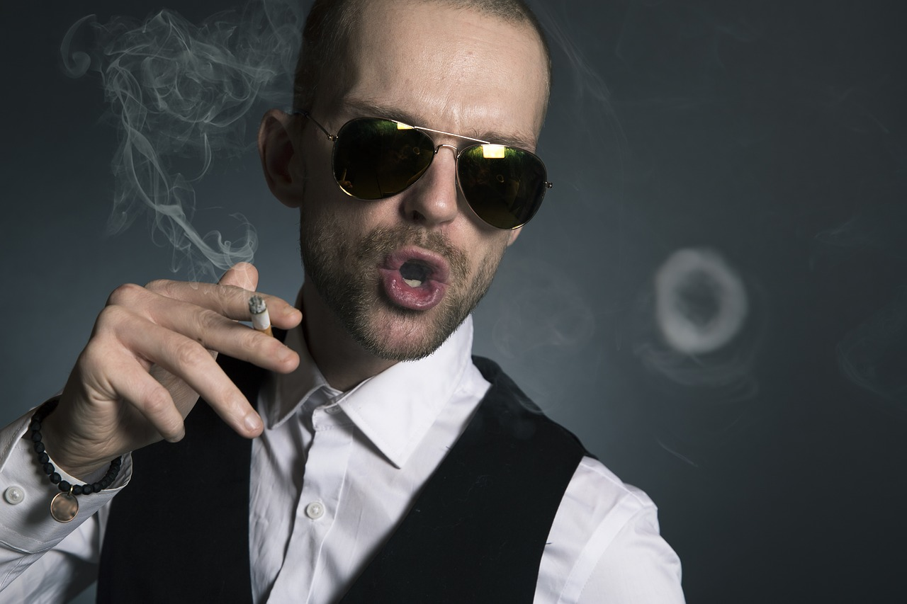

Wyprawy z nami - czy to dobry pomysł ?
Kilka słów
O MNIE
Mam na imię Kamil i mieszkam w Lubartowie. Rodzina wspomina, że w wieku 5 lat,
wodząc palcem po mapie, nauczyłem się nazw wszystkich państw, ich flag i stolic.
Dziś, 30 lat później, choć przez cały ten czas fascynowało mnie poznawanie nowych
miejsc, a swoją stopę postawiłem w 31 krajach, wcale nie nazwałbym się podróżnikiem.
Uwielbiam za to samodzielnie organizować wyjazdy dla mnie i moich bliskich, poznawać kulturę i mieszkańców odwiedzanych krajów, a przede wszystkim doświadczać za każdym razem czegoś, co będę pamiętał do końca życia.
Ta krótka rozmowa przytoczona powyżej miała miejsce na jednej z zanzibarskich plaż i okazała się ziarenkiem, które zaczęło kiełkować w mojej głowie.
Uwielbiam za to samodzielnie organizować wyjazdy dla mnie i moich bliskich, poznawać kulturę i mieszkańców odwiedzanych krajów, a przede wszystkim doświadczać za każdym razem czegoś, co będę pamiętał do końca życia.
Ta krótka rozmowa przytoczona powyżej miała miejsce na jednej z zanzibarskich plaż i okazała się ziarenkiem, które zaczęło kiełkować w mojej głowie.

O NAS
Jako pierwsi Polacy pojechaliśmy na Saharę libijską. Jako pierwsi przejechaliśmy overland z Nairobi do Harare.
Na stałe zaczęliśmy jeździć na Roraimę, do Victoria Falls i do słynnego teraz dzięki Tomkowi Michniewiczowi
rezerwatowi Imire w Zimbabwe.
Jako pierwsi w dziejach Polacy (wyjąwszy kontyngent wojsk ONZ) przejechaliśmy Ennedi i Ounianga w północnym Czadzie - ziemie plemienia Toubou. Przypuszczalnie mamy największe doświadczenie w Polsce w organizacji ekspedycji pustynnych na Saharę. Jako jedyni Polacy zdobyliśmy najwyższy szczyt Sahary - Emi Koussi - w Czadzie.
Specjalizujemy się w wyjazdach do miejsc rzadziej uczęszczanych, wspaniałych, a bez turystów lub z małą ich ilością. W dużej części są to miejsca unikatowe, mało znane lub nieznane w ogóle. Dlatego część wyjazdów mamy w ofercie jako jedni z niewielu w Polsce.
Wyprawy pilotują dla nas pasjonaci i zarazem najlepsi profesjonaliści w Polsce, osoby charyzmatyczne i towarzyskie zarazem, o bardzo wysokiej kulturze osobistej i mające za sobą wiele dokonań na niwie podróżniczej, literackiej i medialnej:
Jako pierwsi w dziejach Polacy (wyjąwszy kontyngent wojsk ONZ) przejechaliśmy Ennedi i Ounianga w północnym Czadzie - ziemie plemienia Toubou. Przypuszczalnie mamy największe doświadczenie w Polsce w organizacji ekspedycji pustynnych na Saharę. Jako jedyni Polacy zdobyliśmy najwyższy szczyt Sahary - Emi Koussi - w Czadzie.
Specjalizujemy się w wyjazdach do miejsc rzadziej uczęszczanych, wspaniałych, a bez turystów lub z małą ich ilością. W dużej części są to miejsca unikatowe, mało znane lub nieznane w ogóle. Dlatego część wyjazdów mamy w ofercie jako jedni z niewielu w Polsce.
Wyprawy pilotują dla nas pasjonaci i zarazem najlepsi profesjonaliści w Polsce, osoby charyzmatyczne i towarzyskie zarazem, o bardzo wysokiej kulturze osobistej i mające za sobą wiele dokonań na niwie podróżniczej, literackiej i medialnej: